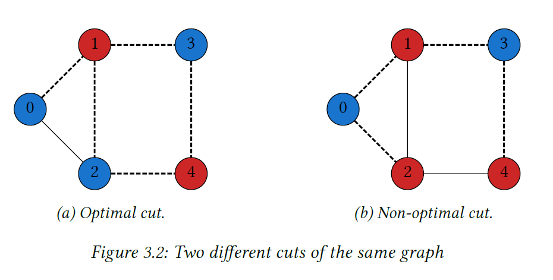
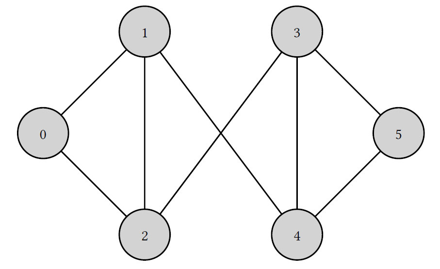

Quadratic unconstrained Binary Optimization Problems
The Max-Cut problem and the Ising model
That is, it is a partition of the graph's vertices into two complementary sets S and T, such that the number of edges between S and T is as large as possible. Finding such a cut is known as the max-cut problem.

Problem formulation

We can formulate the above graph as the follwoing:
The Ising model
As you can easily check that if J_{jk} coefficients are -1 and all the h_j coefficients are 0, the problem is exactly the same as the max-cut problem.
Formulating optimization problems the quantum way
Miving from Ising to QUBO and back
Let's say taht you are given a set of integers S and T, and you are asked whether there is any subset of S whose sum is T. For example, if S = \{1,3,4,7,-4\} and T = 6, then the answer is affirmative because 3+7-4 = 6. If S = \{2,-2,4,8,-12 \} and T=1, the answer is negative because all the numbers in the set are even and they cannot add up to an odd number.
This problem is so called the Subset Sum problem and known for a N-complete. It turns out that we can reduce the Subset Sum problem to finding a spin configuration of minimal energy for any Ising model.
Let's consider a binery values instead of 1 and -1 in this case. if we are given a case S = {a_{0},\cdots,a_{m}} and an integer T, we can define binary variable x_j, j=0,\cdots,m and consider
and we can find the positive answer if and only if we can find the binary values x_j, j=0,\cdots, m such that c(x_{0},x_{1}, \cdots, x_{m}) = 0.
For example, if we are given a set of S = \{1,4,-2 \} and T=2, we can formulate the question as:
and we have to expand (x_{0}+4x_{1}-2x_{2}-2)^{2} to obtain the epxression to be optimized. For this case, we need x_{0}, x_{1} = x_{2} = 1 to find a optimal solution.
Notice that, in all of these cases, the function c(x_{0},x_{1},\cdots,x_{m}) that we need to minimize is a polynomial of degree 2 on the binary variables x_j. We thus generalize this setting and define Quadratic Unconstrained Binary Optimization (QUBO) problems.
where q(x_{0},\cdots,x_{m}) is a quadratic polynomial on the x_j variables.
Note
We are calling this QUBO since we are minimizing quadratic expressions over binary variables with no restrictions (every combinations of ones and zeros are acceptable).
For an Ising problem, if you want to minimize:
with some variables z_{j}, j = 0,\cdots,m, taking values 1 or -1, you can define new variables x_{j} = (1-z_{j})/2. x_{j} will be 0 when z_{j} is 1, and 1 when z_{j} is -1.
On the other hand, you can define a new variable called z_{j} = 1-2x_{j}, which leads you to a quadratic polynomial in the binary variable x_j that takes exactly the same values as the energy function of the original Ising model. If you minimize the polynomical for the variables x_{j}, you can then recover the spin value z_{j} that achieve the minimal energy. As you may wonder, you can also use z_{j} = 2x_{j}-1 to transform Ising problem into QUBO.
For example, if the Icing energy is given by \frac{1}{2}z_{0}z_{1}+z_{2}, then, under the transformation z_{j} = 1-2x_{j}, the corresponding QUBO problem will be (by substitute z_{0} = 1-2x_{0}, z_{1} = 1-2x_{1}, and z_{2} = 1-2x_{2} in to Ising energy \frac{1}{2}z_{0}z_{1}+z_{2}.):
Combinatorial optimization problems with the QUBO model
Binary linear programming
Binary linear programming problems involve optimizaing a linear function on binary variables subject to linear constraints.
where c_{j} are integer coefficients, A is an integer matrix, x is the transpose of (x_{0},\cdots,x_{m}), and b is an integer column vector.
For an example:
Note
Binary linear programming (zero-one programming) is NP-hard.
To write a binary linear program in QUBO, we need to perfrom some transformations. The first one is to convert the inequality constraints into equality constraints by adding slack variables. In the previous example, we have inquality constraints x_{0}+x_{2} \leq 1 and 3x_{0} - x_{1}+3x_{2} \leq 4. We know that the minimum value for the left hand side of the first equation is 0 and -1 for the left hand side of the second equation. The goal here is to add slack variable(s) to make the equation equal when left hand side of the original inequality has its minimum. To add non-negative slack variable(s), we can modify the first inequality into:
and since the minimum of the second inequality is when x_0 = x_2 =0 and x_1 = 1, 3x_{0} - x_{1}+3x_{2} = -1. We need to add at least 3 different slaock variables with a proper coefficient to make 3x_{0} - x_{1}+3x_{2} = 5. Therefore,
can be satisfied if and only if 3x_{0} - x_{1}+3x_{2} \leq 4 can be satified. Now, we rewrite the original problem as,
Next, we introduce penalty terms in the expression that we are trying to minimize. For that, we use an integer B (for which we will select a concrete value later on) and consider the problem,
which is already in QUBO form.
Let's us breakdown why and how to choose the B.
- First, B(x_0 + x_2 + y_0-1)^2 term will penalizes solutions where the sum of the x_0, x_2, and y_0 does not equal 1.
- Second, B(3x_0-x_1+3x_2+y_1+2y_2+2y_3-4)^2 term will pernalizes solutions where this sum does not equal to 4, which means, not a minimim solution.
- The choose of B=11 is based on the range of the solution, which, in this case is [-7,3]. We choose 11 > 10 (range of the solution).
- What if I don't know the exact range?
- You can use $B > \alpha \times \beta $
- where \alpha is the largest coefficient in the objective, \beta is the number of variable in penalty terms. In this case, B > 5 \times 7 = 35.
- Poper turning.
Re-write our QUBO,
Integer linear programming is a generalization of binary linear programming where non=negative variables are used instead of 0 and 1. For example, we have a constraint
where, we can replace a_0 with x_0 + 2x_1 + 4x_2 (a_{0} \leq 5) and a_1 with x_3 + 2x_4 (a_{1} \leq 3) where x_{j} \in \{0,1\}. By doing this, we successfully transform the integer linear programming to a QUBO problem. There is a general rule that tells you how many x_{j} you need. For the fist constraint, a_{0} \leq 5, we need j of x_{j} such that 2^{j} - 1 \geq 5. by solving this, we can get j=3, in the same fashion, we can get j=2 to satisfy 2^{2}-1 \geq 3.
The Knapsack problem
It is straightforward to write the Knapsack problem as a binary linear problem. The Knapsack problem is a NP-hard problem. We need to define binary variables x_j, j=0,\cdots,m that indicate whether we choose object j (x_j = 1) or not (x_j = 0).
where c_j are the object values, w_j are their weights, and W is the maximum weight of the knapsack. Since we are asking the maximum, so we are now minimizing the negative value. Let's write a Knapsack problem as a binary linear program.
which has values of 3,1,7,7 and weight 2,1,5,4 with the maximum weight of 8.
Graph coloring
In its simplest form, it is a way of coloring the vertices of a graph such that no two adjacent vertices are of the same color.
In the graph coloring problem, we are given a graph and we are asked to assign a color to each vertex in such a way that vertices that are connected by and edge (also called adjacent) receive different colors. We also are asked to do this using the minimum possible numebr of colors or using no mroe than a given number of different colors. If we can color a graph with k colors, we say that it is k-colorable. The minimum number of colors needed to color a graph is called its chromatic number.

Let's get start to formulate the graph coloring problem to a QUBO framework!
- first, we have to define some binary variables, let's say we have m vertices from j=0,\cdots,m, and k-1 of different colors with lth on each vertices. To ensure each vertice j only recieve one color l, we can have the following condition:
For an example, this ensure that every j-th vertice only receive one l-th color. We also have to consider for every vertice j, there must exist l such that x_{jl}=1 and such that x_{jh}=0 for any h\neq l.
Now, we can impose a constraint that adjacent vertice are not assigned the same color. We know that if two vertices j and h receive the same color l, then we would have x_{jl}X_{hl}=1. Therefore, the sum of any j and h must be 0, that is,
Then we can write this graph coloring problem into a QUBO framework as,
We added -1 term to ensure when the result deviates from 1, our framework impose a penalty on it. And we don't need to square the second term since they are always non-negative.
The Traveling Salesperson Problem
The Traveling salesperon problem is one of the most famous problems in combinatorial optimization. The problem is wasy to state: you need to find a route that goes through each of the cities in a given set once and only once while minimizing some global quantity (distance traveled, time spent, total cost...).
First, let's deal with visiting each vertex j once and route l once. Let's says we have j vertices and lth different route. If vertex j is the l-th in our travel route, the x_{ij} will be 1 and x_{jh} will be 0 for h \neq l. Thus, for every vertex j, we must impose a constraint,
because every vertex needs to be visited exactly once. Next, since we can only visit one city at a time for each l travel route.
If these two constraints are met, we will have a path that visit every vertex once and only once. However, that's not enough. Remember that we may want to minimize some global quantity (distance traveled, time spent, total cost...)? We need an expression that gives us that alobal quantity in terms of the x_{jl} varialbles. Notice that an edge (j,k) is used if and only if the vertices j and k are consecutive in the path. That is, if and only if there exists an l such that j is visited in position l and k is visited in position l+1. in that case, the cost of using the edge will be given by w_{jk}x_{jl}x_{kl+1}, because x_{jl}x_{kl+1} =1. and if j and k are not consecutive in the path, then x_{jl}x_{kl+1} = 0 for every l.
This ensure that we only visit kl+1 after vertiex kl, thus we calculate the cost(or any global quantity). As a resutl, the cost of our tour is given by,
then we conbine our constraints and get:
where penalty constants B_1 and B_2 is choosen so that any deviated results will generate large outcome in our cost function.